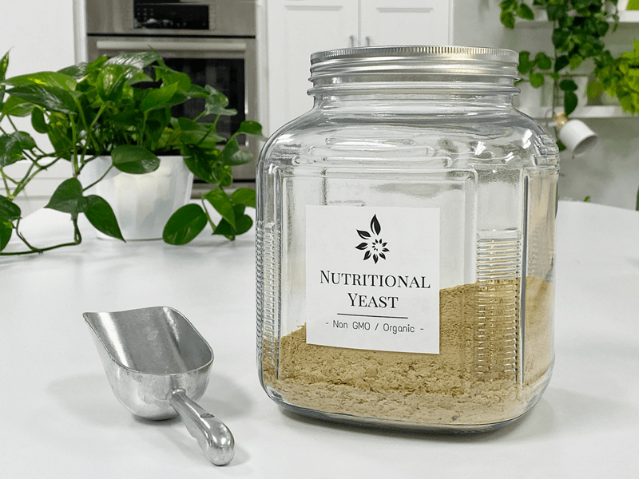

Nutritional Yeast
Nutritional yeast has to be one of my favorite ingredients to play with when creating recipes. It has that magic power that gives food a cheese flavor. Through the years, I have taste tested several different brands, and my favorite hands down is the Red Star Brand. You can sprinkle nutritional yeast on salads, soups, use it in dehydrated crackers, kale chips, cheese sauces, and more. It’s a terrific food, providing nutrition, enhancing flavor, and adding taste to your favorite meals and drinks.

Good Source B12
Nutritional yeast is rich in vitamins, especially the B-complex vitamins. A lot of vegans turn to it because it is a good source of vitamin B12.
It is an excellent source of protein (52%), containing essential amino acids, as well as folic acid, which is necessary for the formation, growth, and reproduction of red blood cells.
Cheesy Flavor
Nutritional yeast has a very cheesy flavor. Think of it as a vegan dried cheese in a flake form. In large measurements, it can give a recipe a real strong cheese flavor, or in small amounts, it is a great flavor enhancer. I like to keep a shaker of it on my countertop for the ease of sprinkling it on most of my meals.
Gluten-free / MSG-free / Vegan
Don’t confuse with baker’s yeast. Because it is inactive, it doesn’t froth or grow as baking yeast does, so it has no leavening ability. And for those who have to watch their yeast consumption due to Candida… you should be just fine using nutritional yeast. But always do your homework and do what is right for you.
© AmieSue.com